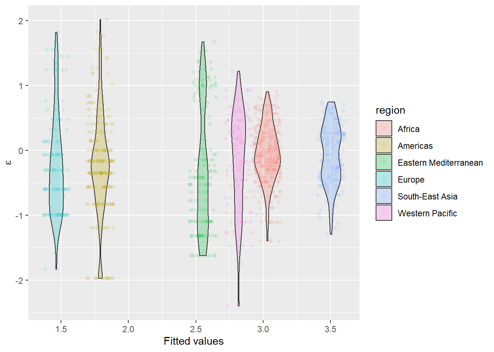

GLM: Count models

Introduction
This week we continued to work with the generalized linear model (GLM) and discussed why we might want to use it and how to interpret the results of these tools. The purpose of this lab is to get you comfortable with regression for count data, and help you get comfortable with some of the diagnostics we will use with these tools, while continuing to work with interpreting results with respect to the link functions we are working with. Next week, we will talk about how we can deal with things like repeated measures on the same categories and nested designs.
By the end of this lab, you should 1) be comfortable specifying general linear models for count data in R, 2) be able to apply this tool to analyze count data from start to finish, and 3) be able to diagnose and interpret the results of these models.
Exercises
Let’s start by reading the file and taking a look at the structure of the data set that we’ll be working with this week.
year region country sex number
1 1986 Africa Senegal Female 15.3
2 1987 Africa Mali Female 27.0
3 1987 Africa Burundi Female 27.8
4 1988 Africa Togo Female 19.7
5 1988 Africa Zimbabwe Female 7.2
6 1988 Africa Uganda Female 19.1These are data that I downloaded from the World Health Organization’s website free of charge. The data set contains 1099 observations of 5 variables. The variables are year, region, country, sex, and number of individuals per 100 that were underweight. These data are estimates, so they are presented as numeric values. We know that they actually represent counts per some unit (i.e. a rate) so we want to convert them to integer class before we start working with them.
# Now we need to make the counts into an integer because these are
# counts and counts are
uw$number = as.integer(uw$number)Poisson regression
Start by looking at a single region, we will use Africa in this case.
# Make a new dataframe that contains only those records for which
# the region is `Africa`
africa = uw[uw$region=='Africa',]Let’s do some data exploration to look at the our sampling distribution of number. Here, a quick histogram of your data should show you what you are looking for.
Do these data appear to conform to a Poisson distribution? Why or why not?
Now, let’s fit a model using number as the response and take a quick look at some regression diagnostics for the model. We will include the variable sex to see if there are differences between males and females. We will also include the variable year as a numeric variable to determine whether or not there is a linear increase or decrease in the number throughout the time series.
Before you look at the summary of the model, be sure to have a look at the regression diagnostics for the count model.
Have a look. Does it appear that you have violated the assumptions underlying the model that you have fit? Think about why or why not.
Now that you have looked at the regression diagnostics, take a look at the model summary
# Print the summary of the model
summary(model)
Call:
glm(formula = number ~ year + sex, family = negative.binomial(theta = 1),
data = africa)
Deviance Residuals:
Min 1Q Median 3Q Max
-1.41262 -0.26729 -0.08145 0.25462 0.93405
Coefficients:
Estimate Std. Error t value Pr(>|t|)
(Intercept) 36.269089 6.045822 5.999 4.68e-09 ***
year -0.016632 0.003018 -5.511 6.65e-08 ***
sexMale 0.142461 0.041978 3.394 0.000763 ***
---
Signif. codes: 0 '***' 0.001 '**' 0.01 '*' 0.05 '.' 0.1 ' ' 1
(Dispersion parameter for Negative Binomial(1) family taken to be 0.1587279)
Null deviance: 72.861 on 377 degrees of freedom
Residual deviance: 66.292 on 375 degrees of freedom
AIC: 3065.2
Number of Fisher Scoring iterations: 4You’ll note that we have included both categorical and numerical explanatory variables in this model. This makes the interpretation of the model slightly more complicated than some of the simpler models we have looked at so far.
If you try to predict the mean expected value for females (Intercept term) from these coefficients as we have done with previous excercises, we get huge values that don’t make much logical sense. The reason for this is the combination of categorical and numerical explanatory variables. Remember: the interpretation of regression coefficients (or \(Beta_j\)) is the effect of \(X_i\) on \(Y_i\) given that all other \(X\) are held constant. If we simply do:
…then we are implicitly telling R that the variable year is being held constant at zero. Because the scale of year is large (1986-2015) relative to our counts, we get ridiculously large values if we try to predict the mean value of number forfemale without specifying a reasonable value for year. So, if we want to get a reasonable prediction for the mean expected value of number for females, we need a reasonable value of year. In most cases, unless you are predicting across the range of years, using the mean is fine (although not ideal):
# Predict mean values of female
female = 36.269089 -0.016106*mean(africa$year)
female
[1] 4.004595
# Now, we need to use the inverse of the link function to get our prediction.
# Since the link function was 'log', we use:
exp(female)
[1] 54.84963We see that the mean number of females per 100 in the African region that were underweight during the time period from 1986 through 2015 was about 19. What if we wanted to do this for males? Your turn:
Question 1. What is the mean number of males per 100 in the African region that were underweight during the time period under study? Use the model coefficients to determine this.
Realize that we could also make these predictions across year for each sex, or for both sexes if we used a value of 0.5 for sexMale. Let’s do it for both here.
# Make a sequence of years for prediction
years = seq(1986, 2015, 1)
# Make the predictions
bothSexes_preds = exp( 36.269089 - 0.016632*years + 0.142461*.5 )
# Plot the results
plot(africa$year, africa$number, pch=21, bg=c('gray', 'black')[africa$sex],
yaxt='n', xlab='Year', ylab='Number underweight per 100')
axis(2, las=2)
# Add the predictions
lines(years, bothSexes_preds, lwd=2, col='red')Now, do this for males and females separately by replacing 0.5 with a 1 or a 0. Plot the raw data only once, as shown above, and add a predictive line for each sex. This plotting exercise is not optional.
Question 2. Using either your predicted values or the plots you have made, what is the mean difference between males and females during the time period under study? The difference is statistically significant…do you think it is biologically meaningful? Defend your answer.
Negative binomial regression
Now, we will take a step back and start working with the entire data set. Let’s take another quick look at it just to refresh our memories.
# Look at the first 10 rows of data
head(uw, 10)
year region country sex number
1 1986 Africa Senegal Female 15
2 1987 Africa Mali Female 27
3 1987 Africa Burundi Female 27
4 1988 Africa Togo Female 19
5 1988 Africa Zimbabwe Female 7
6 1988 Africa Uganda Female 19
7 1988 Africa Ghana Female 23
8 1990 Africa Nigeria Female 33
9 1990 Africa Mauritania Female 42
10 1991 Africa United Republic of Tanzania Female 23
# Let's find out how many unique regions we have in the data set
unique(uw$region)
[1] Africa Americas Eastern Mediterranean Europe South-East Asia Western Pacific
Levels: Africa Americas Eastern Mediterranean Europe South-East Asia Western PacificOkay, so now instead of looking at just one region from the data set, we will look at all six to see if there are differences between regions. Leave us have another exploratory look at the data:

It’s pretty obvious here that no matter which way we slice it, these are decidedly not coming from a Poisson distribution. So, what do we do? This is GLM! We just need to use a different error distribution. From our histogram, it should be clear that we are now working with a negative binomial error structure.
Start by fitting a negative binomial regression model to the data. We will use the glm.nb function in the MASS package.
# Load the Mass package
library(MASS)
# Now fit a model
nb.mod = glm.nb(formula=number~region, data=uw)Use the glm.diag.plots() function to look at the residual diagnostics for this model, understanding that things may look a little funky given that we are in the land of GLM.
Question 3. Based on the residual diagnostics, does it look like this model provides a reasonable fit to our data? Are we in obvious violations of any of our assumptions?
Now that we have done some model validation, let’s have a look at the actual results of our model using the summary function. We can also look at the overall effect of region on number using the Anova function in the car package.
We can see from the output, that there was there a significant effect of region on the number of individuals per 100 that were underweight.
Now, predict the mean number of individuals that were underweight per 100 for each of the regions in this study using the coefficients from the model. The predict function that we have been working with the last few weeks does not have a method for dealing with glm.nb models yet, so we will need to do this by hand:
# Get the summary of the model coefficients
res = summary(nb.mod)$coefficients
res
Estimate Std. Error z value Pr(>|z|)
(Intercept) 3.0314620 0.03232841 93.770839 0.000000e+00
regionAmericas -1.2397025 0.05831411 -21.259049 2.718702e-100
regionEastern Mediterranean -0.4789620 0.06336443 -7.558847 4.066585e-14
regionEurope -1.5658119 0.07876244 -19.880185 6.041058e-88
regionSouth-East Asia 0.4721631 0.06113325 7.723507 1.131716e-14
regionWestern Pacific -0.2141699 0.06935241 -3.088139 2.014141e-03
# Now, make the predictions
preds = c()
for(i in 1:nrow(res)){
if(i==1){
preds[i] = exp(res[1, 1])
} else {
preds[i] = exp(res[1, 1] + res[i, 1])
}
}
# Give the vector names to facilitate comparison
names(preds) = row.names(res)
names(preds) = gsub(names(preds), pattern = 'region', replacement = '')
names(preds)[1] = 'Africa'
# Print the results
preds
Africa Americas Eastern Mediterranean Europe South-East Asia Western Pacific
20.727513 6.000000 12.839161 4.330357 33.235714 16.731481 Question 4. Which region reported the greatest number of individuals that were underweight? Which region reported the fewest number of individuals that were underweight?
Now that you have your model results, make a boxplot of number by region to determine whether or not your model results make sense. If they do not, do it again.
Finally, we can use these data to determine how the number of underweight individuals changed during the time series by region to determine if there were differences in how these numbers changed over time.
Make two models for this section. For the first model, consider only the additive effects of region and year on number. In the second model, include the interaction effect between region and year on number.
Use the AIC function in base R to get the AIC score for each of the two models you have created. Note that we could make a model selection table for these two models, but we would have to build our own function for this, telling R how to do it by hand because the function has not yet been defined for this model class…I will show you how to do this next week. For now, let’s keep it a little simple(R).
Question 5. According to the AIC scores that you have extracted, is there unequivocal evidence to indicate that one of these models is better than the other?
Bonus: 1pt
Digging deeper, we probably want to know whether all regions change in pretty much the same way, or if they differ.
Given that we know all regions showed a tendency to decrease in the number of individuals that were underweight during the course of this study, which region decreased the most? (You will need to look at the model coefficients using summary() to see which is most negative in the interaction model).
Another way of asking this is: in which region did people tend to gain the most weight? Is this surprising to you given what you know about trends in social behaviors and obesity during the past half century in this region?
This work is licensed under a Creative Commons Attribution 4.0 International License. Data are provided for educational purposes only unless otherwise noted.